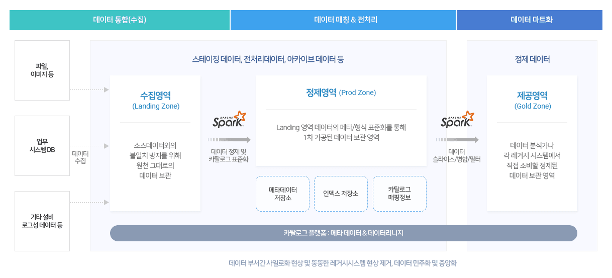
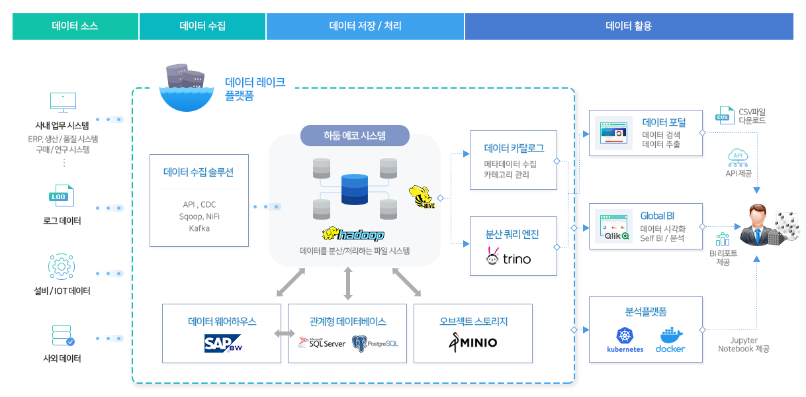

고객지원
데이터레이크/포털 소개
웹 포털 서비스의 데이터플랫폼을 소개합니다.
DATA LAKE데이터 레이크란?
정형, 비정형 데이터를 원본으로 수집하고 데이터를 활용 할 수 있도록 전처리/분석/공유 등이 가능한 중앙 집중식 데이터플랫폼

데이터 통합(수집) - 데이터매칭&전처리 - 데이터마트화
DATA PORTAL데이터 포털이란?
데이터레이크가 보관하고 있는 데이터를 사용자에게 개방하고 검색/조회/추출이 가능한 웹 포털 서비스
DATA LAKE-PIPELINE데이터 레이크 파이프 라인 관계도
원천에서 사용자까지 흐름

데이터 소스 - 데이터수집 - 데이터 저장/처리 - 데이터 활용